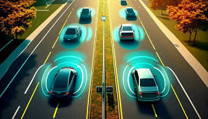
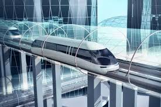
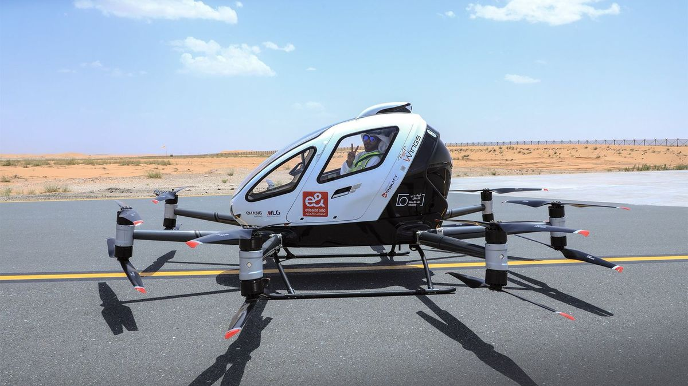

"Future Transportation"
Transportasi Masa Depan
Transportasi di masa depan, diprediksi akan didorong
oleh inovasi teknologi yang mengutamakan efisiensi, keberlanjutan, dan kenyamanan.
Beberapa perkembangan utama yang dapat terjadi antara lain:
- Kendaraan Otonom (Self-Driving Cars) Kendaraan otonom atau mobil
tanpa pengemudi diperkirakan akan menjadi hal biasa di masa depan.
Teknologi ini memanfaatkan sensor, kecerdasan buatan (AI), dan algoritma
untuk mengendalikan kendaraan secara otomatis tanpa intervensi manusia.
Selain meningkatkan keselamatan dengan mengurangi kesalahan manusia,
kendaraan otonom juga dapat mengoptimalkan alur lalu lintas, mengurangi
kemacetan, dan mengubah konsep kepemilikan kendaraan. Ini juga dapat
mengubah cara kita merencanakan kota dan infrastruktur transportasi.

Klik pada gambar untuk info selengkapnya
- Transportasi Hyperloop adalah sistem transportasi berbasis tabung
vakum yang memungkinkan perjalanan dengan kecepatan sangat tinggi, lebih
cepat dari pesawat terbang. Konsep ini, yang dikembangkan oleh Elon Musk,
berpotensi menghubungkan kota-kota besar dalam hitungan menit dengan
efisiensi tinggi dan dampak lingkungan yang rendah. Proyek uji coba sedang
berjalan, dan jika berhasil, Hyperloop bisa merevolusi transportasi jarak
jauh.

Klik pada gambar untuk info selengkapnya
- Transportasi Terbang (Urban Air Mobility), dengan kemajuan dalam teknologi
penerbangan listrik, drone penumpang atau taksi terbang yang mengangkut orang ke
titik tujuan melalui udara mulai dirancang. Penggunaan kendaraan udara kecil ini
untuk transportasi perkotaan dapat mengurangi kemacetan jalan raya, memungkinkan
perjalanan yang lebih cepat dalam kota besar, dan menjadi alternatif transportasi
yang lebih efisien di masa depan.

Klik pada gambar untuk info selengkapnya